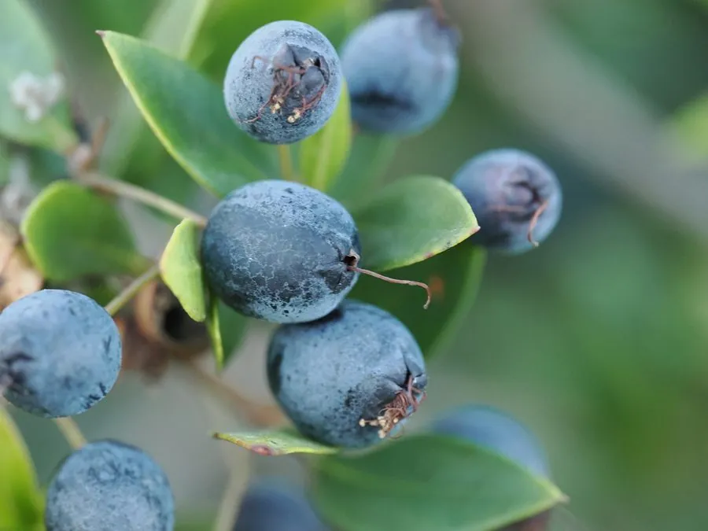

灌木与花木 · 植物界
香桃木 Myrtus communis

桃金娘科香桃木属常绿灌木，叶片揉碎后散发浓郁芳香，花白色、浆果蓝黑，是地中海地区传统的香料与观赏植物。
- 分类
- 门被子植物门纲木兰纲目桃金娘目科桃金娘科属香桃木属
- 栖息环境
- 地中海沿岸的干燥山坡与灌丛，喜光耐旱、耐修剪
- 地理分布
- 原产地中海沿岸、北非与西亚；中国南方引种栽培
- 保护级别
- 暂无评估；中国未列入国家重点保护野生植物名录
物种志
香桃木为桃金娘科香桃木属常绿灌木，高一至三米，分枝密集，小枝具四棱。叶片对生，革质，卵状披针形，全缘，表面深绿有光泽，揉碎后有浓郁的芳香。花单生于叶腋，花冠白色，花瓣五枚，雄蕊多数，花期五至七月；浆果椭圆形，成熟时蓝黑色，表面被白粉，果期九至十一月。
香桃木原产地中海沿岸、北非和西亚，中国南方有引种栽培。它喜温暖湿润和充足阳光，耐旱、耐修剪，适宜疏松肥沃、排水良好的石灰质土壤，不耐严寒。枝叶含挥发油，可提取香精用于化妆品和食品；干燥枝叶是地中海料理的调味香料；果实可食。花白果蓝、叶色常绿，也常作绿篱和盆栽观赏。在希腊神话中，香桃木被视为爱与美的象征。
形态与习性
- 株高1–3 m，分枝密集
- 花期5–7 月，花白色、芳香
- 果期9–11 月，浆果蓝黑色
- 光照喜光，全日照生长良好
- 水分耐旱，忌积水
- 土壤疏松排水良好的石灰质土
- 主要用途香料植物、绿篱与盆栽
趣味知识
- 香桃木的叶片揉碎后香气浓郁，地中海料理常用它为烤肉和豆类调味。
- 在古希腊，香桃木被视为爱神阿佛洛狄忒的圣树，常用于婚礼花环。
- 它的枝叶可提取香精，是古龙水和香皂的常见香原料之一。